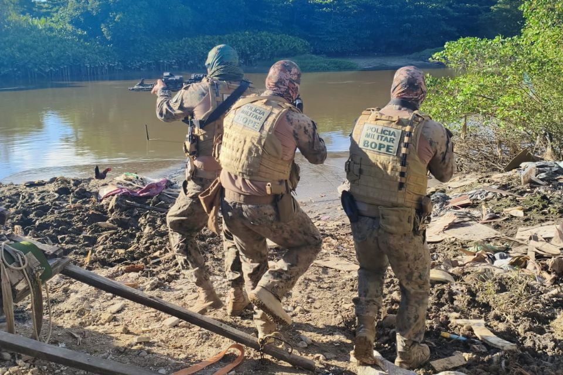
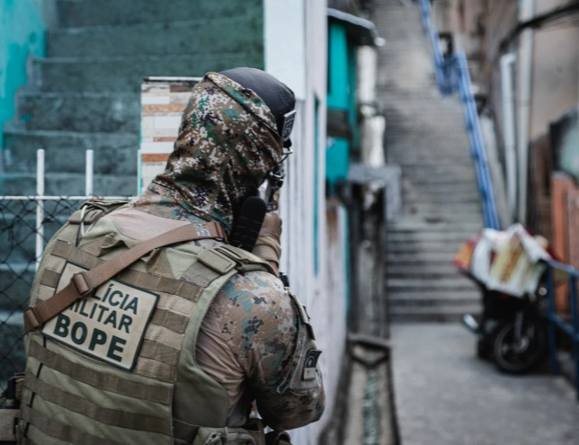

Fundada em Pernambuco no ano de 2017, a Patrulha de Ações de Comandos (PAC) é uma equipe especializada composta por policiais altamente capacitados para atuar em terrenos de difícil acesso e em operações de elevada complexidade. Sua missão é combater a criminalidade por meio de ações de infiltração, reconhecimento e apoio operacional, empregando técnicas especializadas para garantir a segurança da população e a preservação da ordem pública. Devido às características geográficas de Pernambuco, que possui extensas áreas de manguezais e regiões alagadas, a Patrulha de Ações de Comandos (PAC) é preparada para operar não só em zonas urbanas, como também em zonas de mangue. Esse tipo de ambiente exige treinamento especializado, resistência física e técnicas específicas de deslocamento, permitindo que a equipe atue com eficiência em locais de difícil acesso no combate à criminalidade.